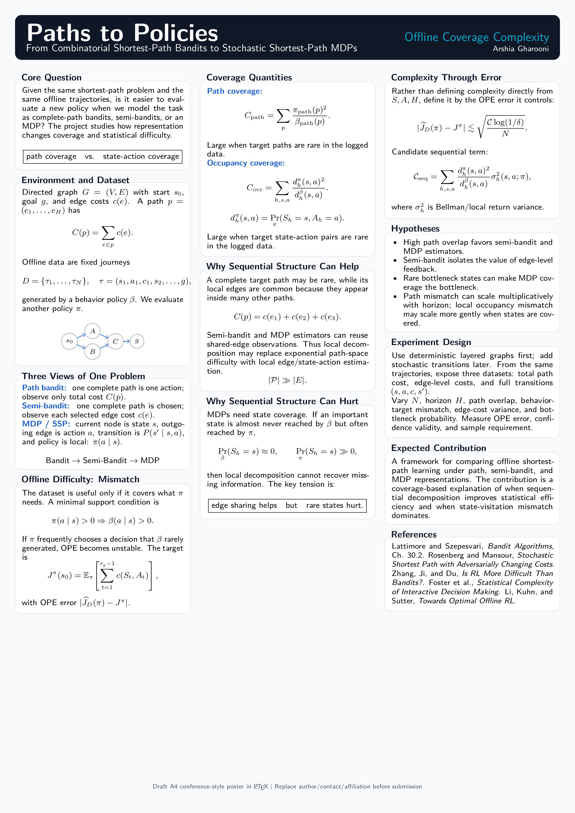
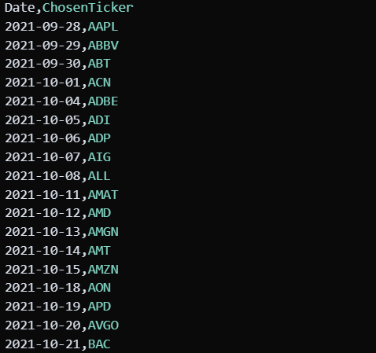

Breaking the Benchmark: Revealing LLM Bias via Minimal Contextual Augmentation
✖

Investigated whether large language models truly reduce social bias by applying minimal, meaning-preserving augmentations to the BBQ benchmark, extending evaluation to underexplored categories like ageism and disability, revealing latent bias patterns and model-specific robustness differences.
- Authors: Kaveh Eskandari, Mahammed Kamruzzaman, Me, Gene Louis Kim, Vasanth Sarathy and Ninareh Mehrabi (Supervisor)
- Paper (arXiv)
Paths to Policies: Offline Coverage Complexity from Combinatorial Bandits to RL (In progress)
✖

We study how sequential problem representation changes offline learning difficulty by comparing shortest-path bandit, semi-bandit, and MDP formulations under identical behavior data. Our framework characterizes when local decomposition improves statistical efficiency and when state-occupancy mismatch becomes the dominant statistical bottleneck.
- Authors: Me, Amirhossein Asadi, Mohammad Hossein Rohban
RADAR: Risk-Aware Dynamic Adaptive Returns
✖

RADAR learns per-stock regularized Sharpe q-scores, balancing exploration via trade counts using UCB-RSSR; ensures anytime average-cost compliance for observation-agnostic, capital-efficient portfolio adaptation, risk-managed, profitable growth.